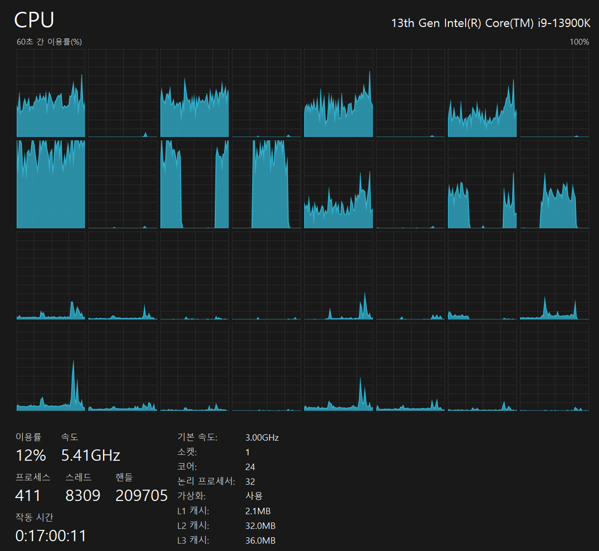
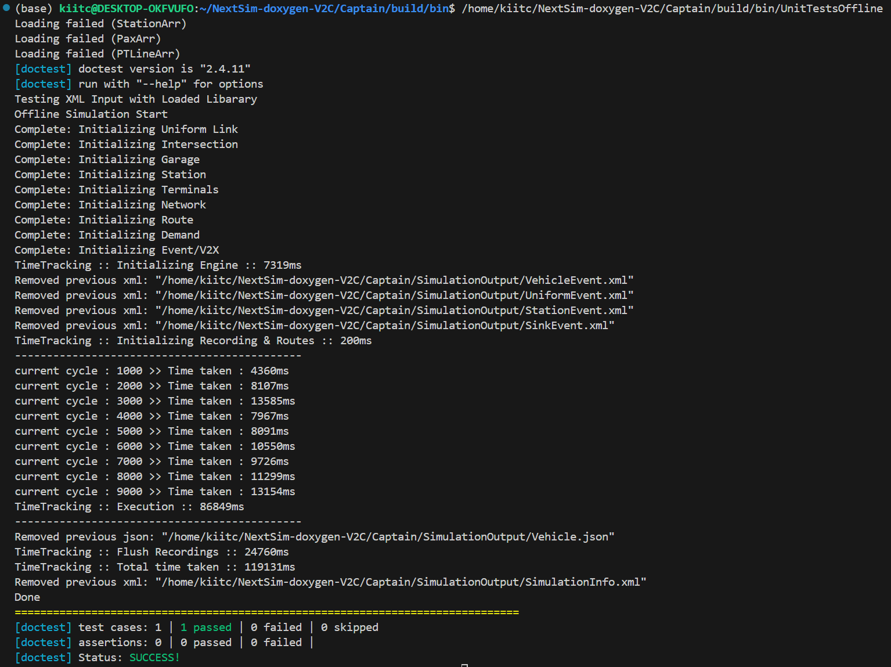

시간이 곧 성능이다
대도시 규모의 교통 시뮬레이션은 모델이 정확해질수록 느려진다. AI가 부하를 예측해 24개의 코어에 계산을 적응적으로 나눠 담는 APE(Adaptive Parallel Execution) — 시뮬레이션을 ‘실시간 의사결정 도구’로 끌어올리려는 시스템 엔지니어링의 기록이다.

왜 시뮬레이션은 느린가
교통 시뮬레이션은 도시를 통째로 컴퓨터 안에 옮겨 놓는 일이다. 수십만 대의 차량과 보행자가 각자의 목적지를 향해 움직이고, 신호는 바뀌고, 교차로에서는 양보와 정체가 순간마다 계산된다. 이런 미시(microscopic) 시뮬레이션은 도로 위 개별 객체를 한 명 한 명 추적하기에, 현실에 가장 가까운 대신 계산 비용이 가장 크다. 광역권 도시를 위한 차세대 AI 융합 모빌리티 시뮬레이션 과제(과기정통부·KAIST 컨소시엄, 2024.07–2027.12)에서 우리가 마주한 벽도 바로 이것이었다. 시뮬레이터 NextSim의 계산 비용이 전체 워크플로의 병목이었다.
느림의 근원은 규모의 곱셈에 있다. 에이전트(차량·보행자)의 수가 늘고, 도로망의 노드와 링크가 촘촘해질수록, 매 시뮬레이션 사이클에서 처리해야 할 상호작용은 선형이 아니라 그 이상으로 불어난다. 대도시 규모에 이르면, 현실의 1시간을 흉내 내는 데 계산기 앞에서 몇 시간을 기다려야 하는 상황이 벌어진다. 문제는 단순히 “오래 걸린다”가 아니다. 시뮬레이션이 현실보다 느리면, 그것은 더 이상 의사결정을 돕는 도구가 아니라 사후 분석 자료에 그친다.
이 지점에서 관점의 전환이 필요했다. 그동안 시뮬레이션의 품질은 대체로 얼마나 현실과 비슷한가, 즉 모델의 정확도로 이야기되어 왔다. 그러나 교통 관제나 정책 실험처럼 결과를 놓고 곧바로 판단을 내려야 하는 현장에서는, 정확도만큼이나 얼마나 빨리 답을 내놓는가가 성능을 좌우한다. 아무리 정교한 모델이라도 답이 늦으면 쓸모가 반감된다. 우리의 과제는 모델을 더 정확하게 만드는 일이 아니라, 이미 정확한 모델을 제시간에 돌아가게 만드는 일이었다.

부하 불균형이라는 진짜 병목
“느리다”는 증상을 원인으로 좁히려면 로그를 들여다봐야 한다. NextSim의 실행 콘솔에는 사이클마다 소요시간이 찍힌다. 그 숫자를 모아 보니 이야기가 드러났다. 어떤 사이클은 약 4,360ms 만에 끝나는데, 어떤 사이클은 13,585ms까지 치솟았다. 같은 시뮬레이션 안에서 사이클 하나가 다른 사이클보다 세 배 넘게 걸린다는 뜻이다. 총 실행 시간은 약 119,131ms를 기록했다.
이 편차 자체가 병목의 정체다. 미시 시뮬레이션에서 계산량은 시간마다 균일하지 않다. 출근 시간대처럼 특정 구역에 차량이 몰리는 사이클은 무겁고, 한산한 사이클은 가볍다. 도로망의 어떤 구획은 교차로가 밀집해 상호작용이 폭증하고, 어떤 구획은 한적하다. 즉 계산 부하는 시간축으로도, 공간축으로도 고르지 않다. 그런데 계산 자원을 이 불균형을 무시한 채 나누면, 가벼운 몫을 맡은 코어는 일찍 끝내고 놀고, 무거운 몫을 맡은 코어는 뒤처진다. 전체 사이클은 언제나 가장 늦게 끝나는 코어를 기다린다.
정리하면, 우리가 싸워야 할 상대는 “느린 시뮬레이터”가 아니라 “불균형한 부하”였다. 단일 스레드에서 병렬로 옮기는 것만으로는 부족하다. 부하가 시간과 공간에 따라 요동치는 한, 그 요동을 실시간으로 읽고 자원을 다시 배분하지 않으면 병렬화의 이득 대부분이 대기 시간으로 새어 나간다.
Chapter 3. 설계적응형 병렬처리 — 부하를 예측해 나눈다
해법의 이름은 APE, Adaptive Parallel Execution이다. 핵심 발상은 이렇다. 매 사이클을 기계적으로 균등 분할하지 말고, 다가올 사이클의 계산 부하를 미리 예측해 무거운 몫과 가벼운 몫이 코어마다 비슷해지도록 적응적으로 나눈다. 여기서 AI의 역할이 등장한다. 부하는 무작위로 튀지 않는다. 시간대, 직전 사이클들의 소요 패턴, 구역별 밀집도 같은 관측 가능한 신호에 규칙이 숨어 있다. AI는 이 신호로부터 “다음 사이클에서 어느 구획이 얼마나 무거울지”를 추정하고, 그 추정에 맞춰 작업을 코어에 배정한다.
이 접근이 정적(static) 분할과 갈리는 지점이 여기다. 정적 분할은 도로망을 한 번 잘라 코어마다 고정 배정하고 끝낸다. 부하가 시간에 따라 이동하면 이 고정 배정은 곧 낡은 지도가 된다. 반면 적응형 분할은 사이클마다 “지금 무거운 곳이 어디인가”를 다시 묻고, 그에 맞춰 몫을 다시 그린다. 부하가 도심에서 외곽으로 옮겨 가면, 자원도 따라 옮겨 간다.
설계에서 놓치지 말아야 할 균형점이 하나 있다. 부하를 더 정교하게 예측하고 더 잘게 나눌수록 균형은 좋아지지만, 예측과 재배분 자체도 계산을 소모한다. 오케스트레이션 비용이 병렬화로 아낀 시간을 넘어서면 배보다 배꼽이 커진다. 그래서 APE는 “완벽한 균형”이 아니라 “값싸게 얻는 충분한 균형”을 노린다. 예측은 가볍게, 재배분은 부하 이동이 유의미할 때만 — 이 절제가 실전 성능을 가른다.
Chapter 4. 실측24코어 위에서, 그리고 50%라는 목표
실험 환경은 Intel Core i9-13900K, 24코어(성능 코어와 효율 코어를 합해 32 논리 프로세서)다. 이 위에서 APE의 목표는 명확하다. 특정 코어만 붉게 달아오르고 나머지가 파랗게 노는 그림이 아니라, 모든 코어가 고르게, 동시에 일하는 그림을 만드는 것이다. 커버 이미지의 병렬 이용률 모니터가 지향하는 상태가 바로 그것 — 32개의 프로세서 그래프가 서로 비슷한 높이로 함께 오르내리는 모습이다.
아래 표는 문제의 본질을 숫자로 요약한다. 병목은 평균이 아니라 편차에 있다.
| 항목 | 관측값 | 의미 |
|---|---|---|
| 최소 사이클 소요시간 | 약 4,360 ms | 가벼운(한산한) 사이클 |
| 최대 사이클 소요시간 | 약 13,585 ms | 무거운(혼잡한) 사이클 |
| 사이클 간 편차 | 약 3.1배 | 부하 불균형의 크기 |
| 총 실행 시간 | 약 119,131 ms | 개선의 기준선(baseline) |
| 실행 환경 | i9-13900K · 24코어(32 논리) | 병렬화의 무대 |
| 목표 | 시뮬레이션 시간 −50% | 실시간 활용의 문턱 |
표의 세 번째 행이 이 연구의 심장이다. 사이클 사이의 3배가 넘는 편차는, 병렬화로 회수할 수 있는 낭비가 그만큼 크다는 뜻이기도 하다. 만약 무거운 사이클의 일을 여러 코어로 고르게 흩뿌리고 가벼운 사이클의 여유를 활용할 수 있다면, 전체 실행 시간을 지배하던 ‘가장 느린 조각들’의 합이 줄어든다. 우리가 겨냥하는 50% 단축은 여기서 나온다 — 새로운 계산을 발명해서가 아니라, 이미 하고 있던 계산을 기다림 없이 배치해서.
물론 50%는 손쉬운 숫자가 아니다. 예측의 오차, 코어 간 데이터 동기화, 캐시와 메모리 대역폭의 한계가 이론적 상한을 갉아먹는다. 그러나 baseline인 약 119,131ms를 절반으로 끌어내리는 순간, 시뮬레이션은 질적으로 다른 물건이 된다. 하룻밤 걸리던 시나리오가 반나절에 끝나고, 반나절이 몇 시간으로 줄면, 그때 비로소 “돌려 보고 판단한다”는 실시간 루프가 성립한다.
Chapter 5. 함의시간이 성능이다 — 모델을 넘어 시스템으로
이 연구가 던지는 메시지는 개별 최적화 기법을 넘어선다. AI 시스템의 가치를 이야기할 때 우리는 흔히 모델의 정확도에 시선을 고정한다. 그러나 시뮬레이션처럼 결과가 곧 의사결정으로 이어지는 영역에서는, 정확도만으로 성능이 완성되지 않는다. 아무리 옳은 답이라도 늦게 도착하면 그 값어치가 깎인다. 여기서 시간은 부차적 지표가 아니라 성능 그 자체다.
그래서 APE는 순수한 모델 문제가 아니라 시스템 엔지니어링 문제다. 부하를 어떻게 예측하고, 코어에 어떻게 배분하며, 오케스트레이션 비용을 어떻게 억제하는가 — 이 세 가지의 균형이 최종 속도를 결정한다. 모델의 정확도를 지키면서 실행 시간을 절반으로 줄이는 일은, 더 똑똑한 예측기 하나로 해결되지 않는다. 예측·분배·동기화가 맞물린 시스템 전체를 조율해야 한다.
이 관점은 교통에만 갇히지 않는다. 대규모 물리 시뮬레이션, 에이전트 기반 사회 시뮬레이션, 실시간 디지털 트윈 — 계산량이 시간과 공간에 따라 요동치는 모든 시스템은 같은 병목을 공유한다. 부하는 결코 균일하지 않고, 균일하지 않은 부하를 균일하게 나누는 능력이 곧 확장성을 결정한다. APE가 겨냥하는 것은 하나의 시뮬레이터를 빠르게 하는 데 그치지 않고, ‘요동치는 부하를 실시간으로 길들이는 방법’이라는 더 넓은 문제다.
맺음말기다림을 설계에서 지운다
좋은 시뮬레이션은 현실을 닮는 데서 시작하지만, 쓸모 있는 시뮬레이션은 제시간에 답하는 데서 완성된다. 우리는 NextSim을 더 똑똑하게 만들지 않았다. 대신 그것이 이미 하던 계산을, AI가 부하를 예측해 24개의 코어에 고르게 흩뿌리도록 다시 배치했다. 목표는 화려하지 않다 — 놀고 있는 코어를 없애고, 가장 느린 코어의 발목잡기를 줄이고, 그렇게 절반의 시간을 되찾는 것. 그러나 그 절반이 시뮬레이션을 사후 보고서에서 실시간 의사결정 도구로 바꾼다. 모델이 아무리 발전해도, ‘언제 답이 오는가’를 설계하는 일은 여전히 엔지니어의 몫으로 남는다. 시간이 곧 성능이기 때문이다.
참고
- 광역권 도시를 위한 차세대 AI 융합 모빌리티 시뮬레이션, 과기정통부·KAIST 컨소시엄 연구과제(2024.07–2027.12).
- NextSim 미시 교통 시뮬레이터 실행 로그 및 CPU 병렬 이용률 모니터(Intel Core i9-13900K, 24코어·32 논리 프로세서).
- 본문의 소요시간·편차·총 실행 시간(약 4,360–13,585 ms, 약 119,131 ms)은 특정 실행 환경에서의 실측 관측값으로, 도로망·시나리오·환경에 따라 달라진다. ‘50% 단축’은 연구 목표치이다.